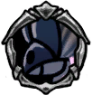

Crystal Hunter
 Fires shards of fast-growing crystal at intruders.Make their homes all the way up at the top of the world. Do they use the crystals willingly as weapons or are they merely hosts and the crystals parasites?
Fires shards of fast-growing crystal at intruders.Make their homes all the way up at the top of the world. Do they use the crystals willingly as weapons or are they merely hosts and the crystals parasites?

x 7
x 13
 x 20
x 20A flying enemy from the Crystal Peak, which shoots crystal projectiles at the player. In this regard, they are similar to the Aspid Hunter, which flies in a similar pattern and also fires projectiles.

 On sighting the player, the Crystal Hunter will float above the player, keeping in medium range.The Crystal Hunter will fire a crystal projectile at the player, which flies in a straight line.If the projectile hits the player, it deals one damage and keeps traveling. When it hits a surface, it creates a cluster of crystals on the ground, which persists for a while, even if the Crystal Hunter is killed.
The crystal projectile can be deflected by attacking it with the nail, but unlike the claw-picks of the Husk Miners, it does not deal any damage to enemies.The spawned crystal clusters break when hit with the player's nail or a spell, but can be nail jumped on.Though an interesting mechanic, it is better to dodge the crystal projectiles instead of trying to intercept them. Close the distance and strike between their shots.Try to break the crystal clusters quickly, to decrease the possibility of taking carless damage.
On sighting the player, the Crystal Hunter will float above the player, keeping in medium range.The Crystal Hunter will fire a crystal projectile at the player, which flies in a straight line.If the projectile hits the player, it deals one damage and keeps traveling. When it hits a surface, it creates a cluster of crystals on the ground, which persists for a while, even if the Crystal Hunter is killed.
The crystal projectile can be deflected by attacking it with the nail, but unlike the claw-picks of the Husk Miners, it does not deal any damage to enemies.The spawned crystal clusters break when hit with the player's nail or a spell, but can be nail jumped on.Though an interesting mechanic, it is better to dodge the crystal projectiles instead of trying to intercept them. Close the distance and strike between their shots.Try to break the crystal clusters quickly, to decrease the possibility of taking carless damage.
Crystal Hunters can be found the following areas: